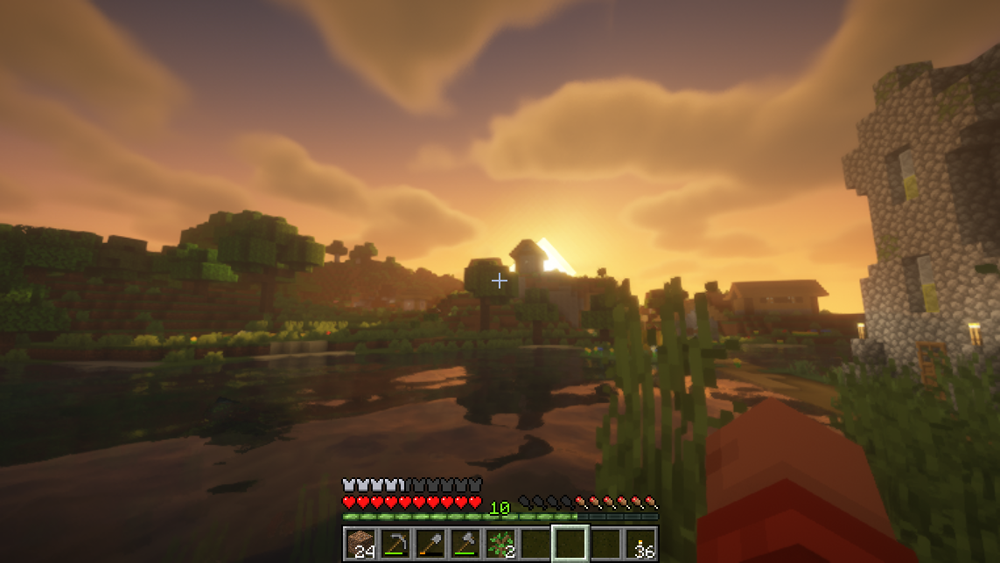
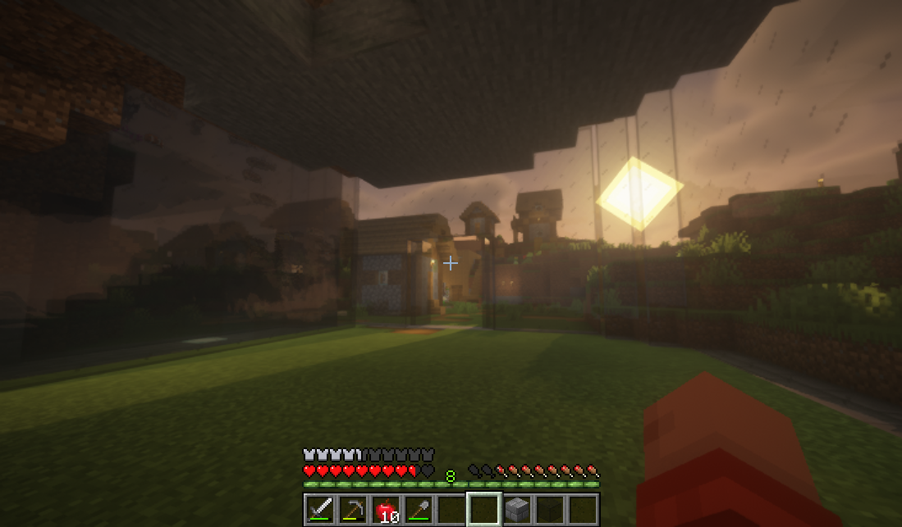

SALAS • MINECRAFT
MINECRAFT
Um mundo onde construir é apenas o começo.
01 — A HISTÓRIA
Um mundo feito de possibilidades.
Minecraft começa de uma forma simples: você aparece em um mundo aberto, sem um caminho obrigatório e com inúmeras possibilidades diante de você. Não existe uma história única que todos precisam seguir. Cada jogador pode construir seu próprio caminho, explorar lugares desconhecidos, enfrentar desafios ou simplesmente criar um lugar para chamar de casa.

02 — A EXPERIÊNCIA
Criar, explorar e resolver problemas.
A experiência de Minecraft envolve observar o ambiente, tomar decisões, testar ideias e encontrar maneiras de superar diferentes desafios. Construir uma casa, planejar uma exploração ou descobrir como criar determinado item exige que o jogador pense no que precisa fazer e escolha como chegar até seu objetivo.

03 — FORA DO JOGO
O que podemos levar para a vida?
Algumas experiências presentes em Minecraft podem ser relacionadas a situações do cotidiano. Planejar antes de construir, testar ideias, aprender com erros e procurar diferentes soluções são exemplos de comportamentos que também podem aparecer fora do jogo.
Nem toda experiência precisa ter uma resposta.
Jogos podem proporcionar momentos de criatividade, descoberta, diversão e reflexão, mas cada pessoa vive essas experiências de uma maneira diferente. O que alguém encontra em Minecraft pode não significar a mesma coisa para outra pessoa.
Por isso, mais importante do que dizer que um jogo é bom ou ruim é observar como ele faz parte da vida de quem joga: quanto tempo ocupa, o que desperta, o que ensina e o que acontece quando a pessoa fecha o jogo e volta para o mundo real.